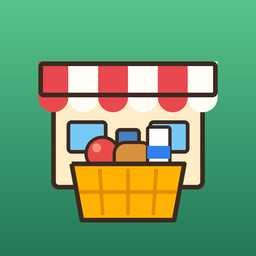

Martkin
Kendi hipermarketini kur · Build your own supermarket
Türkçe: Martkin, küçük bir manavdan dev bir hipermarkete büyüdüğün bir market işletme oyunudur. Depodan rafları doldur, kasada hesap yap, kasiyer ve reyon görevlisi işe al, yeni reyonlar ve şehirler aç.
English: Martkin is a supermarket tycoon game where you grow a tiny grocery into a huge hypermarket. Stock the shelves, check out customers, hire cashiers and stockers, open new aisles and cities.